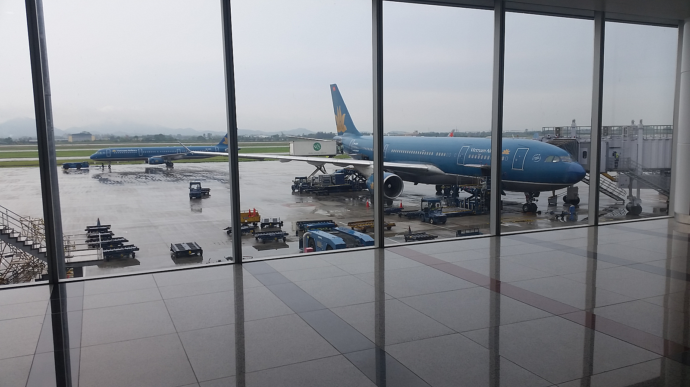
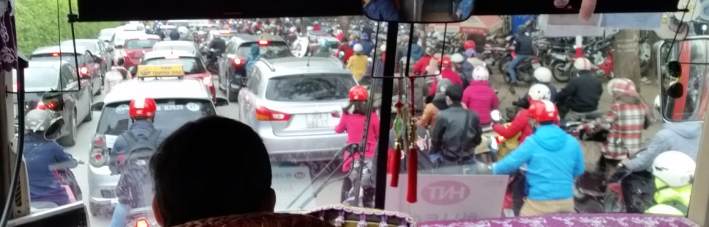
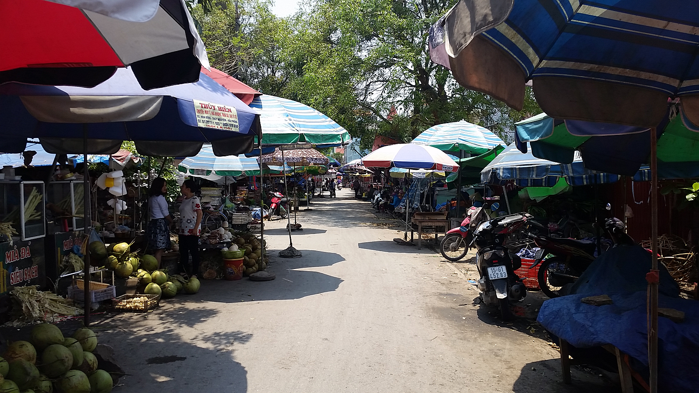
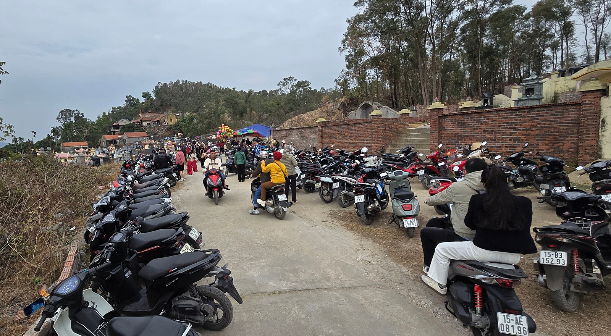
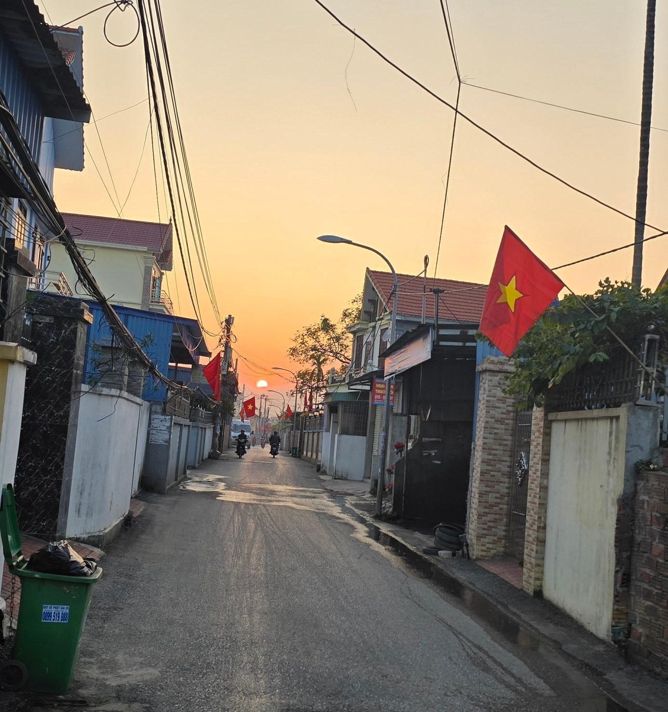

베트남에 도착했다는 것을 느끼는 순간
베트남에 여러 번 다녀왔지만, 지금도 비행기에서 내려 공항 밖으로 나갈 때면 비슷한 생각이 듭니다.
“아, 또 베트남에 왔구나.”
특히 한국의 겨울에 베트남을 방문하면 그 느낌은 더욱 선명합니다.
김해공항에서 두꺼운 외투를 입고 비행기에 올랐다가 하노이 노이바이 공항에 도착해 밖으로 나오면, 한국과는 전혀 다른 공기가 얼굴을 스칩니다.
날씨와 온도부터 다른 나라에 왔다는 것이 온몸으로 느껴집니다.
하지만 제가 생각하는 베트남의 진짜 첫인상은 따뜻한 날씨보다 따로 있습니다.
바로 오토바이입니다.

공항을 나서자마자 만나는 수많은 오토바이
노이바이 공항을 나서 도로를 바라보면 자동차와 오토바이가 뒤섞여 움직이는 풍경을 쉽게 볼 수 있습니다.
그리고 여기저기서 들려오는 경적 소리.
베트남을 처음 방문한 한국인이라면 한 번쯤 이런 생각을 할지도 모릅니다.
“아니, 공항 주변에도 오토바이가 이렇게 많다고?”
저 역시 처음에는 놀랐습니다.
자동차 사이로 오토바이가 지나가고, 오토바이 사이로 자동차가 움직입니다.
한국의 도로에서 익숙하게 보던 모습과는 상당히 달랐습니다.
처음에는 조금 무질서하고 복잡해 보이기도 했습니다.
그런데 베트남을 여러 번 방문하고 현지 생활을 가까이에서 보면서 생각이 조금씩 바뀌었습니다.

베트남에서 오토바이는 단순한 이동수단이 아닙니다
베트남 사람들에게 오토바이는 단순히 가까운 거리를 이동할 때 사용하는 교통수단만은 아니었습니다.
생활 그 자체에 가까웠습니다.
한국에서는 자동차가 일상적인 이동수단의 중심이라면, 베트남에서는 오토바이가 그 역할의 상당 부분을 담당하고 있습니다.
출근할 때도 오토바이를 탑니다.
장을 보러 갈 때도 오토바이를 이용합니다.
아이를 학교에 데려다줄 때도 오토바이를 타고, 배달과 택배 업무에서도 수많은 오토바이를 볼 수 있습니다.
가족이 함께 오토바이를 타고 이동하는 모습도 베트남에서는 어렵지 않게 볼 수 있습니다.
처음 베트남에 갔을 때는 이런 모습 하나하나가 신기했습니다.
하지만 현지를 자주 방문하다 보니 어느 순간 너무나 자연스러운 베트남의 일상으로 보이기 시작했습니다.
왜 베트남에는 오토바이가 많을까요?
베트남을 직접 다니다 보면 오토바이가 발달한 이유를 어느 정도 이해하게 됩니다.
도시의 큰 도로만 보면 자동차가 다니기에 큰 문제가 없어 보입니다.
하지만 주택가나 도시 외곽으로 조금만 들어가면 이야기가 달라집니다.
좁은 골목길이 상당히 많습니다.
한국의 일반 승용차가 들어가기 어렵다고 느껴질 정도로 좁은 길도 흔하게 볼 수 있습니다.
반면 오토바이는 이런 길을 자유롭게 이동할 수 있습니다.
골목 안쪽에 있는 주택이나 작은 상점까지 쉽게 접근할 수 있다는 점에서 오토바이는 매우 편리한 이동수단입니다.
지역에 따라 도로 사정이 좋지 않은 곳도 있습니다.
이런 생활환경을 직접 보면 베트남에서 오토바이가 널리 사용되는 이유를 조금은 이해할 수 있습니다.
베트남 전통시장에서도 오토바이는 빠질 수 없습니다
베트남을 이야기할 때 전통시장도 빼놓기 어렵습니다.
베트남에는 지금도 크고 작은 전통시장이 활발하게 운영되고 있습니다.
시장 안에는 신선한 채소와 과일, 고기, 생선, 생활용품 등 다양한 물건이 가득합니다.
그리고 시장을 방문할 때마다 눈에 들어오는 것이 있습니다.
바로 오토바이입니다.
시장 입구나 주변에는 수많은 오토바이가 줄지어 주차되어 있는 모습을 쉽게 볼 수 있습니다.
반면 자동차를 위한 주차공간은 상대적으로 찾기 어려운 경우가 많았습니다.
물건을 사고 오토바이에 싣고 돌아가는 사람도 많습니다.
장바구니를 오토바이에 걸기도 하고, 구입한 물건을 좌석이나 발판 주변에 싣고 이동하기도 합니다.
베트남의 전통시장을 보고 있으면 오토바이가 단순한 교통수단이 아니라 생활의 한 부분이라는 사실을 더욱 실감하게 됩니다.

가장 놀라웠던 베트남의 퇴근 시간
제가 베트남에서 가장 인상 깊게 보았던 풍경 중 하나는 퇴근 시간의 도로였습니다.
저녁이 되면 사방에서 오토바이가 쏟아져 나오기 시작합니다.
도로를 가득 채운 수많은 오토바이의 모습은 처음 보는 사람이라면 누구나 한 번쯤 놀랄 정도입니다.
멀리서 바라보고 있으면 마치 거대한 물결이 도로 위를 움직이는 것처럼 보이기도 합니다.
처음에는 이렇게 많은 오토바이가 어떻게 서로 부딪히지 않고 움직이는지 신기했습니다.
각자의 오토바이가 서로 다른 방향으로 움직이는 것처럼 보이지만, 한동안 지켜보고 있으면 나름의 흐름을 따라 이동하고 있다는 느낌을 받게 됩니다.
처음 베트남을 방문했을 때는 복잡하고 정신없게만 보였던 풍경입니다.
하지만 여러 번 보다 보니 이제는 베트남에 왔다는 것을 느끼게 해주는 익숙한 모습이 되었습니다.
베트남에서 경적 소리가 많은 이유
베트남 도로에서 또 하나 놀라운 것은 경적 소리입니다.
처음에는 어디를 가든 경적이 들리는 것처럼 느껴졌습니다.
한국에서 운전할 때 경적은 상대방에게 강한 불만을 표시하는 의미로 받아들여지는 경우가 많습니다.
그래서 처음에는 베트남 사람들도 도로에서 서로 화를 내고 있는 것처럼 생각했습니다.
하지만 현지 도로를 자주 경험하면서 조금 다르게 느끼게 되었습니다.
베트남에서는 경적이 자신의 위치나 움직임을 알리는 의사소통 수단처럼 사용되는 경우가 많았습니다.
“지나갑니다.”
“옆에 있습니다.”
“앞으로 나가겠습니다.”
제가 느끼기에는 이런 의미에 가까운 경우가 많았습니다.
물론 상황에 따라 경고의 의미도 있겠지만, 한국에서 느끼는 경적과는 분위기가 상당히 달랐습니다.
그래서인지 처음에는 시끄럽게만 들리던 경적 소리도 시간이 지나면서 베트남 도로문화의 한 부분으로 느껴지기 시작했습니다.

낯설었던 오토바이 풍경도 이제는 베트남의 모습입니다
지금도 베트남에 가면 도로를 가득 메운 오토바이를 한동안 바라보게 됩니다.
처음에는 복잡하고 무질서해 보였습니다.
하지만 베트남 사람들의 생활방식을 조금씩 알게 되면서 오토바이를 바라보는 생각도 달라졌습니다.
좁은 골목을 자유롭게 이동하고, 시장에 가고, 아이를 데려다주고, 출퇴근을 하는 모습.
그 속에는 베트남 사람들의 일상생활이 그대로 담겨 있습니다.
한국에서 자동차가 생활의 중요한 부분인 것처럼 베트남에서는 오토바이가 사람들의 생활 가까이에 자리 잡고 있습니다.
베트남을 처음 방문하는 한국인이라면 따뜻한 공기와 함께 가장 먼저 기억에 남는 풍경 중 하나가 아마 수많은 오토바이일 것입니다.
저 역시 그랬습니다.
그리고 지금은 오토바이가 가득한 도로를 보면 이런 생각이 먼저 듭니다.
“베트남에 왔구나.”
한베커플은 실제 한·베 국제결혼과 베트남 방문 경험을 바탕으로, 직접 보고 느낀 베트남의 생활과 문화 이야기를 전하고 있습니다.
